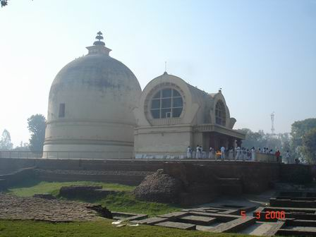
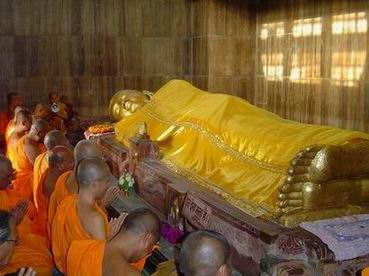
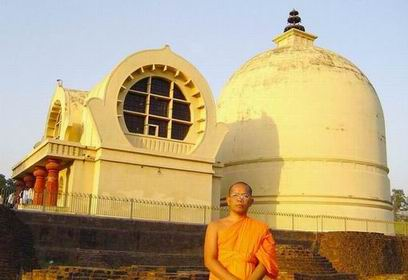
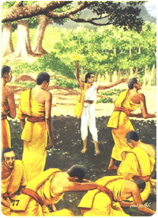
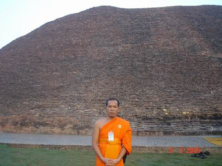
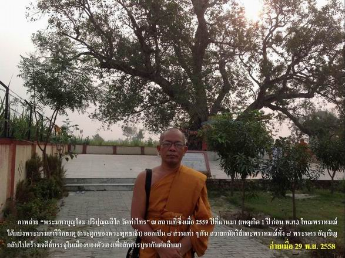
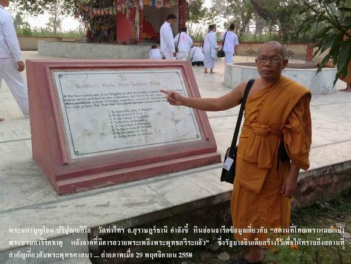
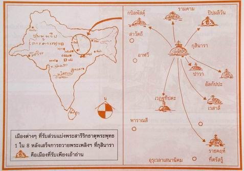
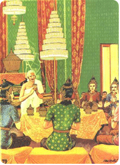

|
พุทธประวัติ
หรือ ประวัติของพระพุทธเจ้า ตอนที่ ๔/๔
(จบ) |
|
ทรงรับผ้าสิงคิวรรณจากปุกกุสะ ขณะนั้นบุตรแห่งมัลลกษัตริย์ผ้ผูหนึ่งชื่อ ปุกกุสะ เป็นสาวกของอาฬารดาบส กาลามโคตร ออกจากเมืองกุสินาราจะไปเมืองปาวานคร ครั้นมาถึงที่แห่งนั้นได้เห็นพระพุทธองค์จึงเข้าไปเฝ้า พระพุทธเจ้าจึงทรงแสดง สันติวิหารธรรม โปรดจนปุกกุสะเกิดความเลื่อมใสจึงได้น้อมผ้าสิงคิวรรณ ๒ ผืนเข้าไปถวาย พระองค์ตรัสสั่งให้ถวายพระองค์ผืนหนึ่ง และให้ถวายพระอานนท์ผืนหนึ่ง ปุกกุสะก็ทำตามพุทธบัญชา พระองค์ทรงแสดงธรรมีกถาให้ปุกกุสะชื่นชมเบิกบานใจ แล้วท่านปุกกุสะก็อภิวาททูลลาหลีกไป ครั้นท่านปุกกุสะหลีกไปแล้ว พระอานนท์ก็นำเอาผ้าสิงคิวรรณของท่านเองเข้าไปถวายพระพุทธเจ้าอีก เมือ่พระพุทธเจ้าทรงผ้าสิงคิวรรณทั้ง ๒ ผืนนั้นแล้ว พระกายของพระองค์ก็ผุดผ่องสวยงามยิ่งนัก จนพระอานนท์ทูลสรรเสริญ พระพุทธเจ้าจึงตรัสว่า พระกายของพระตถาคตเจ้าจะผุดผ่องสวยงามยิ่งใน ๒ กาล คือ
๑.ในราตรีที่จะตรัสรู้พระสัมมาสัมโพธิญาร
ที่ใต้ร่มโพธิ์อัสสัตถพฤกษ์ เสร็จแล้วพระองค์ตรัสว่าในยามสุดท้ายแห่งราตรีนี้ตถาคตจักปรินิพพานที่ระหว่างต้นไม้สาละทั้งคู่ ที่สาลวัน กรุงกุสินารา ดูก่อนอานนท์ เรามาพร้อมกันไปยังแม่น้ำกกุธานทีกันเถิด ต่อมาพระพุทธเจ้าพร้อมด้วยภิกษุสงฆ์ก็เสด็จถึงแม่น้ำกกุธานที แล้วเสด็จลงสรงสนานและเสวยจนพอเพียงพระพุทธประสงค์ เสด็จขึ้นจากแม่น้ำกกุธานทีนั้นแล้ว เสด็จไปประทับที่ อัมพวัน ตรัสเรียกพระจุนทกเถระให้ปูลาดผ้าสังฆาฏิให้เป็น ๔ ชั้นถวายพระองค์ทรงสำเร็จสีห ไสยาคือบรรทมโดยนอนตะแคงขวา ตั้งพระบาทให้เหลื่อมกัน มีพระสติสัมปชัญญะมั่น ทำในพระหฤทัยในอันที่จะเสด็จลุกขึ้น, พระจุนทกเถระก็นั่งเฝ้าอยู่ในที่เฉพาะพระพักตร์นั้น ตรัสถึงผลแห่งบิณฑบาตทาน เมื่อพระองค์ทรงพักผ่อนพอบรรเทาความเหน็ดเหนื่อยปล้วจึงตรัสเรียกพระอานนท์มาแล้วตรัสบอกว่า อานนท์ ต่อไปภายหน้า หากจะมีใครทำความเดือดร้อนใจให้แก่นายจุนทะ กัมมารบุตร โดยพูดว่า ที่พระพุทธเจ้าปรินิพพานนั้น ก็เพราะเสวยอาหารบิณฑบาตของท่าน เธอจงช่วยปลอบให้เขาเบาใจโดยชี้แจงแก่เขาว่า เป็นลาภใหญ่ของท่าน ท่านได้ดีแล้ว เราได้รับฟังมาเฉพาะพระพักตร์ว่า บิณฑบาตทานที่ท่านถวายแด่พระพุทธองค์ซึ่งมีผลมาก มีอานิสงส์มากเสมอกันและมีผลมีอานิสงส์มากกว่าบิณฑบาตทานทั้งหลายอื่นนั้น ได้แก่บิณฑบาตทาน ๒ ครั้ง คือ
๑.บิณฑบาตทานที่พระตถาคตเจ้าบริโภคแล้วตรัสรู้
(ผู้ถวายคือ นางสุชาดา) บรรทมอนุฏฐานไสยา ต่อจากนั้น พระพุทธเจ้าพร้อมด้วยพระภิกษุสงฆ์ได้เสด็จข้าม แม่น้ำหิรัญวดี แล้วเสด็จถึงสาลวัน (เรียกอีกอย่างหนึ่งว่า สาลวโนทยาน) ใกล้กรุงกุสินารา แล้วตรัสสั่งให้พระอานนท์ตั้งเตียงหันศีรษะไปทางทิศอุดรหรือทิศเหนือ ระหว่างต้นไม้สาละ(รัง)ทั้งคู่, เมื่อพระอานท์ทำตาม พระดำรัสแล้ว พระพุทธองค์ก็ทรงสำเร็จสีหไสยา มีพระสติสัมปชัญญะมั่น แต่ไม่ได้มีมนสิการในอันที่จะเดฃสด็จลุกขึ้น เพราะเป็นการบรรทมครั้งสุดท้าย เรียกว่า อนุฏฐานไสยา ทรงปรารภสักการะบูชา ครั้งนั้นต้นสาละทั้งคู่ก็ผลิดอกออกผลโดยมิใช่ฤดูกาล ตั้งแต่โคนต้นจนถึงยอด บาน สะพรั่งและหล่นลงมา แม้แต่ ดอกมณฑารพ ซึ่งเป็นดอกไม้เมืองสวรรค์ก็ตกลงมาจากอากาศเพื่อสักการะบูชาพระตถาคตเจ้าเป็นที่น่าอัศจรรย์ แม้แต่จุณณ์แห่งจันทน์สุคนธชาติของทิพย์ก็ตกลงมาจากอากาศเพือบูชาพระตถาคตเจ้า ดนตรีสังคีต ซึ่งเทพเจ้าบรรเลง ก็บันลือลั่นในอากาศ เพื่อจะบูชาพระตถาคตเจ้า ครั้งนั้นพระพุทธเจ้าจึงตรัสเรียกพระอานนท์มาแล้วตรัสว่า อานนท์ ตถาคต หาเป็นผู้อันบริษัทสักการะบูชาด้วยสักการะพิเศษเพียงเท่านี้ก็หามิได้, อานท์ บริษัททั้ง ๔ ผู้ใดก็ตาม เป็นผู้ปฏิบัติตามธรรมสมควรแก่ธรรม ปฏิบัติชอบยิ่ง ผู้นั้นชื่อว่าเคารพ สักการะ บูชา พระตถาคตด้วยการบูชาอย่างยิ่ง โดยสรุปแล้วพระพุทธเจ้าได้ทรงแสดงให้รู้ว่าในพระพุทธศาสนามีการบูชาอยู่ ๒ อย่างคือ
๑.อามิสบูชา
การบูชาด้วยอามิส คือ วัตถุสิ่งของ เช่น ดอกไม้ ธูป เทียน เป็นต้น ในการบูชาทั้ง ๒ อย่างนี้ พระพุทธเจ้าทรงตรัสสรรเสริญการปฏิบัติบูชา (การบูชาประเภทที่ ๒ ) ว่า เป็นการบูชาอย่างยิ่ง เพราะสามารถทำให้พระพุทธศาสนาเจริญยั่งยืนได้ตลอดกาลนาน ทรงแสดงความเป็นไปแห่งเทวดา ขณะนั้น ท่านพระอุปวาณะ ยืนถวายงานพัดทฃอยู่ที่เฉพาะพระพักตร์ พระองค์ก็ทรงขับไล่พระอุปวาณะให้ออกไปเสีย ไมให้ยืนอยู่เบื้องหน้าพระองค์, พระอานนท์สงสัยจึงทูลถามเหตุ พระองค์ตรัสบอกว่า เทวดาในหมื่นโลกธาตุมาประฃุมกันเพืาอจะเห็นตถาคต เต็มในที่ ๑๒ โยชน์เป็นประมาณ จะหาที่ว่างจรดปลายขนทรายลงสักเส้นหนึ่งก็ไม่มี เมื่อพระอุปวาณะมายืนบังเสีย เทวดาเหล่านั้นก็ไม่ได้เห็นพระองค์ จึงยกโทษ(บ่น) ไปต่าง ๆ นานา พระอานนท์จึงทูลถามอีกว่า เทวดาเหล่านั้นทำจิตเป็นไฉน พระเจ้าข้า ? พระพุทธองค์จึงตรัสว่า เทวดามีความสำคัญผิดวิปลาสในอากาศว่าเป็นแผ่นดิน บางเหล่าเห็นแผ่นดินเป็นแผ่นฟ้า (อากาศ) ต่างองค์ก็สยายผม ยกแขนนอนกลิ้งเกลือก โศกเศร้าโศกาแสดงความอาลัยในพระพุทธองค์ ต่างเสียใจและเสียดายว่า พระองค์เสด็จปรินิพพานเร็วนัก บางพวกสิ้นกิเลสแล้วก็เกิดธรรมสังเวชขึ้นในใจว่า สังขารทั้งหลายไม่เที่ยงแท้ มีความแปรเปลี่ยนเกิดดับอยู่ตลอดเวลา ทรงแสดงสังเวชนียสถาน ๔ ตำบล พระอานนท์กราบทูลว่า ภิกษุทั้งหลายที่จำพรรษาอยู่ในทิศต่าง ๆ ครั้นออกพรรษาแล้วก็พากันมาเฝ้าพระองค์โดยประจำ พวกข้าพระองค์ก็ได้พบปะกัน ครั้นพระองค์ปรินิพพานแล้ว พวกข้าพระองค์จักไม่ได้เห็นกัน จักไม่ได้สนทนาธรรมกันเหมือนเมื่อก่อน เมื่อพระอานนท์กราบทูล อย่างนี้แล้ว พระพุทธองค์จึงตรัส สังเวชนียสถาน คือ สถานที่กุลบุตรผู้มีศรัทธา มีความเลื่อมใสควรจะดู ควรจะเห็น ควรจะให้เกิดสังเวช มี ๔ สถาน/แห่ง คือ
๑.สถานที่พระพุทธเจ้าประสูติ
(สวนลุมพินีวัน) ทรงแสดงอาการที่พระภิกษุพึงปฏิบัติในสตรี ลำดับนั้น พระอานนท์ก็ได้กราบทูลถามถึงข้อที่พระภิกษุพึงปฏิบัติในสตรีภาพ พระองค์จึงตรัสว่า พวกท่านพึงปฏิบัติในสตรีภาพอย่างนี้ คือ
๑.อย่าดูอย่าเห็นเสียเลย
เป็นการดี (การไม่ดูไม่เห็นเสียเลย เป็นการดี) วิธีปฏิบัติในพระพุทธสรีระ ลำดับนั้น พระอานนท์จึงกราบทูลถามถึงวิธีที่จะพึงปฏิบัติในพระพุทธสรีระ พระองค์จึงตรัสว่า ท่านทั้งหลาย เหล่าสหธรรมิกบริษัท จงอย่าขวนขวายเพื่อจะบูชาสรีระ (ร่างกาย) แห่งพระตถาคตเจ้าเลย, ถ้าหากว่าบัณฑิต มีกษัตริย์เป็นต้น จะพึงทำ ก็พึงทำอย่างที่ทำแก่พระสรีะของพระเจ้าจักรพรรดิราช คือ ห่อด้วยผ้าใหม่แล้วซับด้วยสำลี สลับกันโดยอุบายนี้ ๕๐๐ ชั้น แล้วเชิญลงในรางเหล็กซึ่งเต็มด้วยน้ำมัน มีฝาเหล็กครอบ ทำจิตกาธารด้วยไม้หอม ถวายพระเพลิง เสร็จแล้วพึงเก็บอัฐิธาตุบรรจุไว้ในเจดีย์ที่ถนนใหญ่ ๔ แพร่ง เพื่อเป็นที่กราบไหว้ สักการะบูชา ของมหาชน ผู้สัญจรไปมาแต่ทิศต่าง ๆ พึงปฏิบัติอย่างนี้เถิด ทรงแสดงถูปารหบุคคล ถูปารหบุคคล คือ บุคคลที่ควรบรรจุอัฐิธาตุไว้ในสถูป, พระพุทธเจ้าตรัสแก่พระอานนท์ว่า ถูปารหบุคคล มี ๔ จำพวก คือ
๑.พระสัมมาสัมพุทธเจ้า(พระพุทธเจ้า) ทั้ง ๔ จำพวกนี้ สมควรบรรจุอัฐิธาตุไว้ในสถูป เป็นที่ไหว้ สักการะ บูชา สามารถเป็นปัจจัยนำให้เกิดในสุคติโลกสวรรค์ ทรงประทานโอวาทแก่พระอานนท์ ในครั้งนั้น พระอานนท์ไปยืนเกาะไม้ที่มีรูปร่างคล้ายศิรษะวานร (ไม้คล้ายหัวลิง-กปิสีสะ) ที่โบราณเรียกไม้นี้ว่า สลักเพชร แล้วร้องไห้อยู่ พระพุทธเจ้าทรงทราบจึงตรัสเรียกพระอานนท์มาแล้วประทานโอวาทว่า อานนท์ ท่านอย่าได้เศร้าโศกรำพันไป เราได้บอกท่านแล้วมิใช่หรือว่า จะต้องพลัดพรากจากของที่รักที่ชอบใจทั้งสิ้น สิ่งใดเป็นของเกิดขึ้น มีขึ้น อันปัจจัยปรุงแต่งขึ้น สิ่งนั้นทั้งหมด มีความฉิบหายไปเป็นธรรมดา อันใคร ๆ จะปรารถนาว่า ขอสิ่งนั้น จงอย่าฉิบหายเลย นั่นมิใช่ฐานะที่จะเป็นไปได้ แล้วตรัสอีกว่า ดูก่อนอานนท์ ท่านอุปัฏฐากเราด้วยกายกรรม วจี กรรม มโนกรรม มาสิ้นกาลนาน ท่านเป็นบุคคลที่มีบุญ ท่านจงพากเพียรเร่งเข้าเถิด ท่านจัดสิ้นอาสวะโดยพลัน ทรงสรรเสริญพระอานนท์ ลำดับนั้นพระพุทธองค์ตรัสเรียกพระภิกษุมาแล้ว ตรัสสรรเสริญพระอานนท์ในท่ามกลางที่ประชุมนั้นว่า พระสัมมาสัมพุทธเจ้าในอดีตก็ตาม ในอนาคตก็ตาม มีภิกษุผู้อุปัฏฐาก ไม่ยิ่งไปกว่าพระอานนท์ผู้อุปัฏฐากพระตถาคตในกาลนี้ พระอานนท์เป็นบัณฑิต ดำเนินกิจด้วยปัญญา รู้จักกาลที่เข้าเฝ้าของบริษัทและพวกเดียรถีย์ แด่พระตถาคตถ้วนถี่ทุกประการ ฯ เสร็จแล้วทรงแสดงข้ออัศจรรย์ของพระอานนท์ ๔ ประการ ได้แก่
๑.เมื่อใดบริษัท
๔ เข้าใกล้ ได้เห็นพระอานนท์ ก็มีจิตยินดี ตรัสเรื่องเมืองกุสินารา ครั้นแล้ว พระอานนท์ก็กราบทูลให้พระองค์เสด็จไปปรินิพพานที่เมืองอื่น ซึ่งเป็นเมืองที่ใหญ่ พระพุทธองค์ทรงห้ามเสียและตรัสว่า อานนท์ ท่านอย่าได้กล่าวอย่างนั้นเลย เมืองกุสินารานี้ ครั้งก่อนชื่อกุสาวดี มีพระเจ้ามหาสุทัศน์จักรพรรดิราชปกครอง มีพลเมืองมาก อุดมสม บูรณ์ด้วยข้าวปลาอาหาร เป็นนครที่ใหญ่โต ยาว ๑๒ โยชน์, กว้าง ๗ โยชน์ เป็นเมืองที่อุดมสสบูรณ์ กึกก้องกังวานไปด้วยเสียงทั้ง ๑๐ โดยไม่สงบทั้งกลางวันและกลางคืน คือ ๑.เสียงช้าง ๒.เสียงม้า ๓.เสียงรถ ๔.เสียงกลอง ๕.เสียงตะโพน ๖.เสียงพิณ ๗.เสียงขับร้อง ๘.เสียงกังสดาล ๙.เสียงสังข์ ๑๐.เสียงคนเรียกกันกินข้าว เมืองกุสินารา เมือง ๕ ป. สำหรับเมืองกุสินารานั้น
ผู้รู้บางท่านกล่าวไว้ว่า เป็นเมือง ๕ ป. ดังนี้
ตรัสสั่งให้แจ้งข่าวปรินิพพานแก่มัลลกษัตริย์ พระพุทธองค์ทรงบัญชาให้พระอานนท์ไปแจ้งข่าวการปรินิพพานของพระองค์ว่า จักปรินิพพานในยามใกล้รุ่งแห่งคืนวันนี้ เพื่อมิให้มัลลกษัตริย์กินแหนงแคลงใจในภายหลัง, พระ อานนท์รับพระบัญชา แล้วเข้าไปบอกแก่มัลลกษัตริย์ในท่ามกลางที่ประชุมที่ ศาลาว่าการ กษัตริย์เหล่านั้นพร้อมด้วยโอรส ลูกสะใภ้ ปชาบดี ก็โศกเศ้รารำพันไปต่าง ๆ นานา แล้วจึงพร้อมกันมาเฝ้าพระพุทธเจ้าที่สาลวัน ซึ่งพระอานนท์ก็จัดให้เข้าเฝ้าตามลำดับวงศ์แล้วเสร็จในปฐมยาม ทรงโปรดสุภัททปริพพาชก สมัยนั้น สุภัททปริพพาชกได้ทราบข่าวว่าพระพุทธเจ้าจะปรินิพพานในคืนนี้ จึงคิดว่า พระพุทธเจ้า มีขึ้นได้ในบางครั้งบางคราวเท่านั้น มีความประสงค์ที่จะทูลถามปัญหาที่ตนเองสงสัยมานาน จึงได้ไปเพื่อจะทูลถามข้อสงสัยนั้น เข้าไปหาพระอานนท์ แล้วเล่าความประสงค์ที่จะเข้าเฝ้าให้ฟัง พระอานนท์คิดว่า จะเป็นการลำบากแด่พระพุทธองค์ จึงได้ห้ามท่านเสีย ๒ - ๓ ครั้ง ครั้นพระพุทธเจ้าได้สดับเสียงนั้นเข้า จึงตรัสให้พระอานนท์อนุญาตให้สุภัททปริพพาชกเข้าเฝ้าได้ตามประสงค์ สุภัททปริพพาชก ครั้นได้เข้าเฝ้าแล้ว จึงทูลถามว่า ครูทั้ง ๖ คือ ปูรณกัสสปะ, มักขิโคศาล, อชิตเกสกัมพล, ปกุทธกัจจายนะ, สัญชัยเวลัฏฐบุตร, นิครนถนาฏบุตร, ได้ตรัสรู้จริงตามปฏิญาณของตน ๆ หรืออย่างไร ? พระพุทธองค์ทรงตรัสห้ามเขาเสียแล้วทรงแสดงธรรมแก่เขาว่า มรรคมีองค์ ๘ ไม่มีในธรรมวินัยใด พระสมณะ ๔ เหล่า ไม่มีในธรรมวินัยนั้น, มรรคมีองค์ ๘ มีในธรรมวินัยของพระตถาคตเท่านั้น สมณะ ๔ เหล่าย่อมมีด้วย, หากว่า ชนทั้งหลาย ยังปฏิบัติดีปฏิบัติชอบอยู่ไซร้ โลกจะไม่พึงว่างจากพระอรหันต์ สุภัททปริพพาชกเกิดความเลื่อมใสแล้วแสดงตนเป็นอุบาสกและทูลขออุปสมบท, พระพุทธองค์ตรัสว่า คนนอกพุทธศาสนาต้องอยู่ติตถิยปริวาส ๔ เดือนจึงจะบวชได้ สุภัททปริพพาชกก็กราบทูลว่า ข้าแต่พระผู้มีพระภาคเจ้า ถ้าติตถิยปริวาสมีกำหนด ๔ เดือนฉะนั้นแล้ว ข้าพระองค์จะอยู่ให้นานถึง ๔ ปี เมื่อล่วง ๔ ปีแล้ว ภิกษุทั้งหลายจงให้ข้าพระองค์บวชเป็นภิกษุเถิด จากนั้น พระพุทธองค์จึงตรัสเรียกพระอานนท์มา แล้วตรัสสั่งให้พระอานนท์นำสุภัททะไปให้บวชเป็นสามเณร เสร็จแล้วนำเข้าไปถวายพระพุทธเจ้า พระองค์ก็ให้สามเณรสุภัททะอุปสมบทเป็นพระภิกษุ และบอกกัมัฏฐานให้ เมื่อเสร็จแล้ว พระสุภัททะก็หลีกออกจากคณะ ไปบำเพ็ญเพียร ไม่ช้าก็สำเร็จเป็นพระอรหันต์ก่อนที่พระพุทธเจ้าจะปรินิพพาน นับเป็นพระอรหันต์องค์สุดท้ายที่ได้เห็นพระศาสดา เรียกว่าเป็น สักขีสาวกของพระพุทธเจ้า ทรงประทานโอวาทแก่ภิกษุสงฆ์ พระพุทธองค์ตรัสเรียกพระอานนท์ให้เป็นผู้รับเทศนาในการที่พระองค์ทรงโปรดประ ทานโอวาทแก่ภิกษุสงฆ์ พระองค์ตรัสว่า ธรรมก็ดี วินัยก็ดีอันใด ที่เราได้แสดงไว้แล้ว บัญญัติไว้แล้ว, ธรรมะและวินัยนั้นแล จักเป็นศาสดาของท่านทั้งหลายโดยกาลเป็นที่ล่วงไปแห่งเรา ตรัสสั่งให้พระภิกษุเรียกกันด้วยคารวโวหาร ต่อจากนั้นพระพุทธองค์ตรัสสั่งให้พระภิกษุเรียกกันด้วยคารวโวหาร ๒ อย่างคือ
๑.ผู้แก่เรียกผู้อ่อน
ให้ใช้คำว่า อาวุโส หรือ ออกชื่อโคตร ก็ได้ ชั่วโมงสุดท้าย ในชั่วโมงสุดท้ายนั้น พระพุทธเจ้าตรัสไว้ ๔ หัวข้อหรือ ๔ เรื่อง คือ ๑.ทรงอนุญาตให้ถอนสิกขาบทเล็กน้อยได้ ด้วยพระดำรัสว่า ดูก่อนอานนท์ ถ้าสงฆ์ปรารถนาจะถอนสิกขาบทเล็กน้อยเสียบ้าง เมื่อเราล่วงไปแล้วก็จงถอนเถิด ๒.ตรัสบอกวิธีลงพรหมทัณฑ์แก่พระฉันนะ คือ เมื่อพระอานนท์ทูลถามถึงพรหมทัณฑ์ว่าเป็นไฉน พระองค์จึงตรัสบอกว่า ดูก่อนอานนท์ เมื่อเราล่วงไปแล้ว สงฆ์พึงทำพรหมทัณฑ์แก่ฉันนภิกษุเถิด คือหากพระฉันนะปรารถนาจะเจรจาคำใด ก็พึงเจรจาคำนั้น ภิกษุทั้งหลายไม่พึงว่ากล่าวตักเตือนสั่งสอนแก่เธอ(พระฉันนะ) ๓.ทรงเปิดโอกาสให้พระภิกษุทั้งหลายถามข้อสงสัย ด้วยพระดำรัสว่า ดูก่อนภิกษุทั้งหลาย ถ้าหากพวกท่านมีความสงสัยในพระรัตนตรัยหรือในมรรคปฏิปทา ก็จงถามเถิด ดังนี้ ๓ ครั้ง แต่พระภิกษุสงฆ์ทั้งหมดนิ่งเงียบเสียทุกครั้ง พระอานนท์จึงกราบทูลว่า ข้อนี้อัศจรรย์ พระเจ้าข้า พระพุทธองค์ก็ตรัสรับรองว่า ภิกษุเหล่านั้น แม้รูปหนึ่ง ก็ไม่มีความสงสัยในพระรัตนตรัย เพราะพระภิกษุสงฆ์จำนวน ๕๐๐ รูปที่มาประชุมนั้น ล้วนเป็นพระอริยบุคคล สิ้นความสงสัยแล้ว ๔.ทรงประทานปัจฉิมโอวาท พระพุทธเจ้าก่อนแต่จะปรินิพพาน ได้ทรงสั่งสอนหรือให้โอวาทเป็นครั้งสุดท้ายไว้ คำสั่งสอนหรือพระโอวาทนั้นมีชื่อเรียกว่า ปัจฉิมโอวาท มีใจความว่า ดูก่อนภิกษุทั้งหลาย เราผู้ตถาคตขอเตือนท่านทั้งหลายให้รู้ว่า สังขารทั้งหลายมีความเสื่อม ความฉิบหายไปเป็นธรรมดา ท่านทั้งหลาย จงยังกิจทั้งปวง อันเป็นประโยชน์แก่ตนเองและผู้อื่น ให้ถึงพร้อมบริบูรณ์ ด้วยความไม่ประมาทเถิด ปัจฉิมโอวาทนี้มีชื่อเรียกว่า อัปปมาทธรรม ปรินิพพาน เมื่อพระพุทธองค์ตรัสปัจฉิมโอวาทแล้ว มิได้ตรัสอะไรอีกเลย ทรงทำปรินิพพานด้วย อนุบุพพวิการสมาบัติ ทั้ง ๙ ดังนี้ ทรงเข้าฌานที่ ๑, ออกจากฌานที่ ๑ แล้วเข้าฌานที่ ๒, โดยนัยนี้ตามลำดับไปจนถึงฌษนที่ ๘ แล้วเข้า สัญญาเวทยิตนิโรธสมาบัติ ดับจิตสังขารคือสัญญาและเวทนา, ในตอนนี้พระอานนท์ถามพระอนุรุทธะว่า พระพุทธองค์ปรินิพพานแล้วหรือ ?, ซึ่งพระอนุรุทธก็ตอบว่า ยังก่อน พระองค์กำลังเข้าสัญญาเวทยิตนิโรธสมาบัติ เมื่อพระองค์ออกจากสัญญาเวทยิตนิโรธสมาบัติแล้วก็เข้าฌษนที่ ๘ (อรูปฌานที่ ๔) ถอยหลัง โดยนัยนี้ตามลำดับ จนกระทั่งถึงฌานที่ ๑ แล้วเข้าสู่ฌานที่ ๒ - ๓ - ๔ โดยลำดับ พิจารณาองค์แห่งฌานที่ ๔ นั้นแล้ว เสด็จออกจากฌานที่ ๔ นั้น ยังไม่ทันเข้าสู่อรูปสมาบัติ (ฌานที่ ๕) ก็เสด็จดับขันธปรินิพพาน ในยามสุดท้ายแห่งราตรี ในวันอังคารขึ้น ๑๕ ค่ำ เดือน ๖ ก่อนพุทธศักราช ๑ ปี ที่ใต้ร่มไม้สาละทั้งคู่ ที่ สาลวัน หรือบางครั้งเรียกว่า สาลวโนทยาน กรุงกุสินารา (โดยพระองค์เสด็จข้ามแม่น้ำหิรัญวดี ก่อนแล้วจึงถึงสาลวัน นั้น ปรินิพพานบนเตียงซึ่งผันศีรษะไปทางทิศอุดรหรือทิศเหนือ ในระหว่างต้นไม่สาละทั้งคู่ โดยทรงสำเร็จสีหไสยา มีพระสติสัมปชัญญะมั่น แต่ไม่มีมนสิการในอันที่จะเสด็จลุกขึ้น เพราะเป็นการบรรทมครั้งสุดท้ายที่เรีบกกันว่า อนุฏฐานไสยา) ในขณะนั้น ก็เกิดแผ่นดินไหวใหญ่สั่นสะเทือน โลมชาติหรือเส้นขนชูชันสยดสยอง เสียงกลองทิพย์ ดนตรีทิพย์ก็บันลือดังลั่นสนั่นไปในอากาศ   ด้านหน้าพระสถูป
จะปรากฏ พระวิหารปรินิพพาน ภายในมี พระพุทธรูปปางปรินิพพาน สร้างด้วยหินทรายแดง
ขนาดใหญ่อายุประมาณ ๑,๕๐๐ ปี ผู้สร้างคือ หริพละ สวามี และนายช่างชื่อ
ทินะ 
พระมหาบุญโฮม ปริปุณฺณสีโล (ไชยฤทธิ์) ผู้แสดงสังเวคกถา ในขณะที่พร้อมกันกับการปรินิพพานของพระสัมมาสัมพุทธเจ้านั่นเอง มีผู้แสดงสังเวคกถา ดังต่อไปนี้ ๑.ท้าวสหัมบดีพรหม กล่าวว่า บรรดาสัตว์ทั้งปวงในโลก ล้วนจะต้องทิ้งร่างกายไว้ถมปฐพี แม้องค์พระชินสีห์ซึ่งมีพระคุณอันยิ่งใหญ่ ก็ปรินิพพานแล้ว น่าสลดนัก..! ๒.ท้าวโกสีย์เทวราชกล่าวว่า สังขารทั้งหลายไม่เที่ยงหนอ เกิดขึ้นแล้วดับไปเป็นธรรมดา ความสงบแห่งสังขารเหล่านั้น เป็นสุข เพราะสังขารทุกข์มีชาติ ชรา มรณะเป็นต้นมาครอบงำไมได้ ๓.พระอนุรุทธะ กล่าวว่า พระพุทธเจ้ามีจิตใจไม่หวั่นไหวสะทกสะท้านต่อมรณธรรม มีปรินิพพานเป็นอารมณ์ ปรินิพพานแล้วด้วยอนุปาทิเสสนิพพานธาตุ ประหนึ่งประทีปอันไพโรจน์ดับไปฉะนั้น ๔.พระอานนท์กล่าวว่า เมื่อพระพุทธเจ้าปรินิพพานแล้ว มหัศจรรย์อันสยดสยอง มีโลมชาติชูชันเป็นต้น ได้ปรากฏแล้วแก่เทวดาและมนุษย์ทั้งหลาย ข้อสังเกต ในวันที่พระพุทธเจ้าปรินิพพานนั้น มีพระสาวกผู้ใหญ่ที่เป็นประธานอยู่ในสาลวันสถานที่ปรินิพพานนั้นด้วย จำนวน ๒ รูป ได้แก่ ๑.พระอนุรุทธเถระ ๒.พระอานนทเถระ อปรกาล ถวายพระเพลิง เมื่อพระพุทธเจ้าปรินิพพานแล้ว แต่ยังไม่สว่าง พระอนุรุทธะ กับ พระอานนท์ก็แสดงธรรมไปจนสว่าง พอสว่างแล้ว พระอนุรุทธะจึงบัญชาให้พระอานนท์ไปบอกข่าวปรินิพพานแก่มัลลกษัตริย์ พอมัลลกษัตริย์ได้ฟังข่าวแล้วต่างก็โศกเศ้ร้าอย่างหนัก และสั่งให้ราชบุรุษเที่ยวตีกลองประกาศแจ้งข่าวนั้นทั่วเมือง แล้วนำเครื่องสักการะบูชา เครื่องดนตรี ผ้าอย่างดี ๕๐๐ พับ เสด็จไปสู่สาลวันพร้อมกัน บูชาพระพุทธสรีระอย่างมโหฬารสิ้นกาล ๖ วัน ๖ คืน ครั้นรุ่งขั้นวันที่ ๗ ก็ปรึกษากันว่า จะเชิญพระสรีระไปทางทิศใต้แห่งพระนคร แล้วถวายพระเพลิงนอกเมือง, ครั้งนั้น มัลลปาโมกข์ทั้ง ๘ พระองค์ ซึ่งมีกำลังมาก พร้อมกันเข้าอัญเชิญพระพุทธสรีระ ตแก็ไม่สามาารถที่จะให้เขยื้อนจากที่ได้ ท่านเหลานั้นรู้สึกแปลกใจ จึงถามพระอนุรุทธ ซึ่งท่านก็ตอบว่า ที่ทำไปนั้นขัดกับความประสงค์ของเทวดา เทวดาประสงค์จะอัญเชิญพระพุทธรสรีระไปทางทิศเหนือแห่งพระนคร แล้วเข้าทางประตูทิศเหนือ ผ่านไปท่ามกลางพระนคร เยื้องไปออกทางประตูทิศตะวันออก แล้วถวายพระเพลิงพระพุทธสรีระที่มกุฏพันธนเจดีย์ ซึ่งอยู่ที่ด้านตะวันออกแห่งพระนคร พวกมัลลกษัตริย์ได้ยินเช่นนั้นจึงผ่อนผันตามประสงค์ การปฎิบัติในพุทธสรีระ พวกมัลลกษัตริย์ ตรัสถามพระอานนท์ว่า "จะปฎิบัติต่อพระพุทธสรีระอย่างไร ?" พระอานนท์ จึงบอกให้ปฎิบัติเช่นเดียวกับพระเจ้าจักรพรรดิ์ พวกมัลลกษัตริย์ทรงปฎบัติตามพุทธประสงค์ โดยใช้คู่ผ้าขาวใหม่ห่อพระพุทธสรีระ แล้วซับด้วยสำลี แล้วห่อด้วยผ้าขาวใหม่ แล้วซับด้วยสำลี กระทำโดยนับนัยนี้จนครบ ๕๐๐ ชั้น แล้วอันเชิญลงในหีบเหล็กที่มีน้ำมันเต็ม ปิดฝา แล้วประดิษฐานบนจิตกาธาร คือ เชิงตะกอนที่ทำด้วยไม้หอมล้วย ๆ แล้วมัลลปาโมกข์ ๔ พระองค์ ก็นำเพลิงเข้าไปจุดยังเชิงตะกอนทั้ง ๔ ทิศ แต่ก็ไม่สามารถจะจุดให้เพลิงติดได้ มีความสงสัยจงตรัสถามท่านพระอนุรุทธะ และท่านก็เฉลยให้ทราบว่า เทวดาให้รอพระมหากัสสปะ ได้ถวายบังคมพระพุทธบาทด้วยเศียรเกล่าเสียก่อน มัลลกษัตริย์จึงผ่อนผันตาม. เกิดเสี้ยนหนามต่อพระพุทธศาสนา  ขณะนั้น พระมหากัสสปะพร้อมด้วยภิกษุ ๕๐๐ รูป กำลังเดินทางจาก ปาวานคร แวะพักอยู่ที่ร่มไม้แห่งหนึ่ง ได้เห็นอาชีวกผู้หนึ่ง ถือดอกมณฑารพเดินมาแต่ไกลหวังไปเมืองปาวานคร พระมหากัสสปะจึงถามข่าวพระพุทธเจ้า, อาชีวกนั้นก็ตอบว่า "พระสมณโคดมได้บรินิพพานไป ๗ วันแล้ว ลำดับนั้น ภิกษุที่ยังไม่สิ้นราคะ ก็ร้องไห้กลิ้งเกลือกไปมา ส่วนภิกษุที่เป็นพระอรหันต์ขีณาสพ ก็มีสติสัมปชัญญะ อดกลั้นด้วยธรรมสังเวช, ขณะนั้นภิกษุแก่รูปหนึ่งชื่อ สุภัททะ ได้ติดตามพระเถระและภิกษุทั้งหลายด้วย ได้ร้องกล่าวห้ามขึ้นว่า หยุดเท่านั้นเถิดท่านทั้งหลาย อย่าได้เศร้าโศกถึงพระสมณะนั้นเลย เราทั้งหลายได้พ้นจากพระสมณะนั้น ด้วยว่า พระองค์ทรงสังสอนว่าสิ้งนี้ควร สิ่งนี้ไม่ควร เราทั้งหลายเกรงก็ต้องทำตาม จึงลำบากนัก, บัดนี้ พวกเราจะทำสิ่งใดก็ได้ตามความพอใจ ไม่เกรงบัญชาใคร พระมหากัสสปะได้ฟังเช่นนั้น คิดจะทำนิคคหกรรม (ทำโทษ) แต่เห็นว่ายังมิควรก่อน จึงปลอบโยนภิกษุทั้งหลายโดยชอบธรรม แล้วรีบนำภิกษุทั้งหลายไปสู่กุฏันธนเจดีย์ ครั้งเข้าไปใกล้จิตกาธาน (เชิงตะกอน) จึงทำผ้าอุตตราสงฆ์ (จีวร) ให้เฉวียงข้างหนึ่ง ประฌมมือขึ้นนมัสการ กระทำประทักษิณ (เวียนรอบ) จิตกาธาร ๓ รอบ แล้วถวายบังคมพระบาททั้งคู่ด้วยเศียรเกล้า เมื่อมหากัสสปะและภิกษุ ๕๐๐ รุ) ถวายบังคมแล้ว เตโชธาตุ (ไฟ ) อันเป็นทิพย์ก็ได้เกิดขึ้นเอง ลุกโชติช่วงเผาพระพุทธสรีระพร้อมทั้งจิตกาธาร ซึ่งการถวายพระเพลิงพระพุทธสรีระนี้ ได้เกิดขึ้นเมื่อ วันพุธ แรม ๘ ค่ำ เดือน ๖ ปีมะเส็ง ก่อน พุทธศก ๑ ปี โดยมีมัลลกษัตริย์เป็นเจ้าภาพจัดการพระศพ โดยได้ถวายพระเพลิงที่ มกุฎพันธนเจดีย์ ด้านทิศตะวันออกภายนอกกรุงสินารานั่นเอง ข้อควรสังเกต พระสุภัททะ มี ๒ องค์ คือ.-
๑.พระสุภัททะ
วุฑฒบรรชิต เป็นสัทธิวิหาริกของพระมหากัสสปะ (เป็นผู้กล่าวจ้วงจาบพระธรรมวินัย)  สิ่งที่ยังเหลืออยู่ การถวายพระเพลิงพระพุทธสรีระ (พระศพ) นั้น เตโชธาตุ (ไฟ) ได้ติดจิตการธารขึ้นเอง ด้วย อานุภาพของเทวดา ไม่มีใครนำไฟเข้าไปจุด และพระเพลิงนั้นก็ไม่ได้เผาไหม้ไปหมดทุกอย่าง ยังคงเหลือไว้แต่บางส่วน คือเหลือไว้ ๕ อย่าง ได้แก่.
๑.พระอัฐิ
(กระดูก) กับผ้าคู่หนึ่งยังคงเหลือเป็นปกติ นอกนั้นพระเพลิงเผาไหม้ทั้งหมด. (และอาศัยเหตุที่มีการถวายพระเพลิงพระพุทธสรีระที่มกุฎพันธนเจดีย์ ในวัน ๘ ค่ำ เดือน ๖ นี้เอง เป็นต้นเหตุให้ชาวพุทธ ได้จัดให้มีการบูชาประจำปี เพื่อเป็นการระลึกถึงเหตุการณ์วันถวายพระเพลิง วันสำคัญนั้นคือ (วันอัฎฐมีบูชา) จนกระทั่งปัจจุบันนี้ เมื่อเสร็จจากการถวายพระเพลิง มัลลกษัตริย์ทั้งหลาย ก็นำเอาน้ำหอมมาดับจิตกาธาร (ดับไฟที่เชิงตะกอน) แล้วอัญเชิญพระบรมสารีริกธาตุไปประดิษฐานไว้ ณ ลัณฐาคารศาลา ภายในพระนคร ตั้งเหล่าทหารรักษารายล้อมภายในพระนครอย่างแข็งแรงมั่นคง ด้วยประสงค์จะไม่ให้ใครแย่งชิงไป และได้ทำการสักการะบูชามโหฬาร และมีมรหรสพฉลองพระบรมสารีริกธาตุ อย่างมโหฬารตลอด ๗ วัน ๗ คืน.  ภาพที่เห็นนี้ เป็นหลักฐานที่ประจักษ์ชัด ที่แสดงให้เห็นถึงความมีอยู่จริงของพระพุทธเจ้า พระธรรม และพระสงฆ์ ฯลฯ อยู่ที่พวกเราชาวพุทธจะช่วยกันหาโอกาสไปเยี่ยมชม สัมผัส และเรียนรู้ด้วยประสบการณ์ตรงแล้วนำภาพมาโชว์ นำข้อมูลมาบอกเล่า มาเผยแพร่ให้สังคมโลกได้รับรู้ ครับ  แจกพระบรมสารีริกธาตุ ขณะนั้น พระมหากษัตริย์ และ พราหมณ์ ทั้ง ๗ พระนคร คือ.-
๑.พระเจ้าอชาตศัทรู เมืองราชคฤห์. ได้ทรงทราบข่าวว่า พระพุทธเจ้าปรินิพพานที่กรุงกุสินารา จึงส่งทูตเชิญราชสาส์นพร้อมทั้งกองทัดมายังกษัตริย์กรุงกุสินารา เพื่อทูลขอส่วนแบ่งพระบรมสารีริกธาตุไปประดิษฐานไว้ในสถูปเจดีย์เพื่อเป็นที่สักการบูชา ณ เมืองของตน มัลลกษัตริย์ไม่ยอมให้จนเกือบสงครามกันขึ้น 
การที่มัลลกษัตริย์ ไม่ยอมแบ่ง
พระยรมสารีริกธาตุนั้นด้วยเหตุ ๒ ประการ คือ.- ๒.ทรงคิดว่า พระพุทธเจ้าทรงอุตส่าห์มาปรินิพพานในเขตคามของเรา ก็เพื่อประทานพระบรมสารีริกธาตุแก่เรา. ดังนั้น จึงไม่ยอมแบ่งให้นครใด ๆ และได้ตรัสแก่ทูตทั้ง ๗ พระนครว่า พระพุทธเจ้า เสด็จดับขันธปรินิพพานในอาณาเขตของเรา เราจักไม่ให้พระบรมสารีริกธาตุ ส่วนทูตานุทูตพระนครต่าง ๆ ก็ไม่ยอม จวนจะเกิดสงครามขึ้นอยู่แล้ว. โทณพราหมณ์กล่าวสุนทรพจน์-แบ่งพระสารีริกธาตุ ขณะนั้น โทณพราหมณ์ซึ่งเป็นผู้ใหญ่ มีปัญญาชาญฉลาด มีถ้อยคำเป็นที่เชื่อถือของคนทั้วไป ได้ฟังการปฏิเสธของมัลลกษัตริย์ แล้วคิดว่า สงครามและการทะเลาวิวาทเกิดขึ้น เพราะการแย่งพระบรมสารีริกธาตุนั้น ไม่เป็นการสมควรเลย ควรจะแบ่งให้เท่า ๆ กัน เพื่อจะนำไปสักการบูชายังเมืองของตน ๆ"  คิดดังนี้แล้ว จึงได้กล่าวขึ้นว่า ขอท่านมหาราชทั้งหลายจงฟังข้าพเจ้า พระพุทธองค์ทรงเป็นสรณะที่พึ่งแห่งเราทั้งหลาย พระองค์ ทรงเป็นผู้กล่าวสรรเสริญความอดทน อดกลั้น ต่อทุกข์ และกำลังแห่งกิเลส การที่จะถือเอาพระบรมสารีริกธาตุเป็นเหตุ แล้ว ทำการประหัตประหาร ต่อสู่กันด้วยศาสตราอาวุธ เป็นสงครามขึ้นมานั้น ไม่ดีไม่วามเลย, ข้าแต่พระองค์ผู้เจริญ ขอบรรดาเจ้านครทั้งหลาย จงพร้อมใจกันแบ่งพระบรมสารีริกธาตุออกเป็น ๘ ส่วนเสมอกันทุก ๆ พระนครเถิด ขอพระสถูปบรรจุพระบรมสารีริกธาตุ จงแพร่หลายไปทั่วทิศ จักให้สำเร็จประโยชน์ความสุขแก่หมู่สัตว์สิ้นกาลนาน"
เมื่อกษัตริย์ทั้งหลายได้ฟังก็เห็นชอบ
และได้ให้โทณพราหมณ์เป็นผู้แบ่ง โทณพราหมณ์นั้นใช้ตุมพะ (ทะนานทอง)
ตวงพระสารีริกธาตุแบ่งออกเป็น ๘ ส่วนเท่า ๆ กัน ถวายกษัตริย์และพราหมณ์ทั้ง
๘ พระนคร เสร็จแล้วทูตขอตุมพะ (ทะนานทอง) ที่ตวงพระบรมธาตุอันควรแก่บรรจุไว้
ณ เจดีย์สถานไปก่อสถูปบรรจุไว้ในพระสถูป เมืองปิปผลิวัน เพื่อสักการะบูชา ประเภทแห่งสัมมาสัมพุทธเจดีย์ สัมมาสัมพุทธเจดีย์ที่เกิดขึ้นครั้งแรกนั้นมี ๑๐ ตำบล ได้แก่
๑.พระธาตุเจดีย์
๘ ตำบล (คือใน ๘ พรนครที่กล่าวมาแล้ว) รวมเป็น ๑๐ ตำบล หรือ ๑๐ แห่ง. เจดีย์ ๔ ประเภท สัมมาสัมพุทธเจดีย์ คือ เจดีย์อันเนื่องด้วยองค์พระสัมมาสัมพุทธเจ้า ท่านกล่าวไว้ว่ามี ๔ ประเภท คือ.-
๑.ธาตุเจดีย์ เกณฑ์การจัดประเภทแห่งเจดีย์ ๑.พระสถูปที่บรรจุพระบรมสารีริกธาตุ (กระดูก) จัดเป็นธาตุเจดีย์ ๒.พระสถูปที่บรรจุตุมพะ (ทะนานทอง) ที่ตวงพระบรมธาตุ,พระสถูปที่บรรจุอังคาร (เถ้า)สังเวชนียสถานทั้ง ๔ แห่ง, บริขารทั้งหมดของพระองค์, ตลอดถึงเตียง ตั่ง เสนาสนะกุฎี วิหาร ที่พระพุทธองค์เคยประทับ จัดเป็น บิรโภคเจดีย์ ๓.พระสถูปที่บรรจุคัมภีร์ใบลาน หรือหนังสือ และสิ่งต่าง ๆ ที่จารึกพระพุทธวจนะ คือพระธรรมคำสั่งสอนขงพระพุทธองค์ จัดเป็น ธรรมเจดีย์ ๔.เจดีย์ที่สร้างประดิษฐานปูชนิยวัตถุ เพื่อเป็นเครื่องเตือนใจ ให้ระลึกถึงพระสัมมาสัมพุทธเจ้า จะบรรจุพระพุทธรูป หรือพระพุทธปฏิมาก็ตาม ดังนี้ จัดเป็น อุทเทสิกเจดีย์ และพระพุทธรูป ก็สงเคราะห์เข้าใน อุทเทสิกเจดีย์ นี้ด้วย สังคายนา สังคายนา หรือ สังคีติ คือ การร้อยกรองหรือจัดแจงพระธรรมวินัยให้เป็นหมวดหมู่ว่า นี่เป็นธรรม นี่เป็นวินัย, และการสังคายนานี้มีปรากฏว่า พระพุทธเจ้าทรงอนุมัติไว้เมื่อครั้งที่มัลลกษัตริย์เชิญเสด็จไปประทับที่ อุพภตสัณฐาคารสถาน พระองค์ทรงอนุมัติการทำสังคายนาตามคำทูลของพระสารีบุตร ทีแสดงแก่พระภิกษุสงฆ์ในสังคีติสูตร ประโยชน์ของการทำ และโทษของการไม่ทำสังคายนา การทำสังคายนานั้น มีประโยชน์แก่พระศาสนาอย่างนี้ คือ
๑.ได้กำจัดเสียนหนามแห่งพระศาสนาให้สูญสิ้นไป การไม่ทำสังคายนานั้น ย่อมจะเกิดโทษแก่พระศาสนาอย่างนี้คือ
๑.ทำให้พระธรรมวินัยเสื่อมสูญไป ข้อควรสังเกตและตระหนัก การทำสังคายนานั้น ย่อมเป็นเหตุทำให้พระพุทธศาสนาตั้งมั่นอยู่ได้นานและถาวรประการหนึ่ง เพียงเท่านั้นยังไม่พอ จะต้องประกอบด้วยเหตุ คือ พุทธบริษัท ๔ ภิกษุ (รวมสามเณรด้วย) ภิกษุณี อุบาสก และอุบาสิกา จะต้องตั้งใจศึกษาเล่าเรียนพระพุทธศาสนา (คำสั่งสอนของพระพุทธเจ้า) โดยเอื้อเฟื้อ ไม่ดูดาย เมื่อมีความรู้แล้ว ตนเองก็ประพฤติปฏิบัติตามเป็นอย่างดี และแนะนำสั่งสอนผู้อื่นต่อไป นี่แหละ จึงจะทำให้พระพุทธศาสนาเจริญรุ่งเรืองถาวรสืบต่อไปตราบนานเท่านาน วิธีการดำเนินการทำปฐมสังคายนา ในวันที่แจกพระบรมสารีริกธาตุนั้น มีพระสงฆ์ประชุมกันเป็นมหาสันนิบาต พระมหากัสสปะเป็นประธานในสงฆ์ หวังจะให้เกิดอุตสาหะในการสังคายนาพระธรรมวินัย จึงนำเอาคำกล่าวจ้วงจาบพระธรรมวินัยของพระสุภัททะวุฑฒบรรพชิต (หลวงตาแก่ชื่อ สุภัททะ) มากล่าวขึ้นแก่ภิกษุสงฆ์แล้วชวนว่า อย่ากระนั้นเลย เราทั้งหลายจงร้อยกรองพระธรรมวินัยเถิด มิฉะนั้นแล้วคำพูด(วาทะ)ทีมิใช่ธรรมมิใช่วินัยจักรุ่งเรือง พระธรรมวินัยจักเสื่อมถอย คนชั่วจักลบล้างพระธรรมวินัย คนชั่วจักเจริญ คนดีจักเสื่อมถอยน้อยกำลัง ศาสนาก็จักตั้งอยู่ไม่ได้ ครั้นพระมหากัสสปะกล่าวจบ พระสงฆ์ในที่ประชุมนั้นเห็นชอบ จึงตกลงกันทำสังคายนาร้อยกรองพระธรรมวินัยเป็นครั้งแรก และต่อจากนั้นพระสงฆ์รุ่นหลัง ๆ ก็ได้ช่วยกันทำสังคายนาเป็นครั้งคราวต่อมาตามเหตุการณ์นั้น ๆ รวม ๕ ครั้ง แล้วแนะนำสั่งสอนบริษัท ๔ ประพฤติปฏิบัติตามพระธรรมวินัยจนเป็นเหตุให้พระธรรมวินัย (พระพุทธศาสนา) ได้ดำรงคงมั่นมาจนกระทั่งปัจจุบันนี้ การทำสังคายนาหรือทำสังคีตินั้น ที่พอจะนับได้มี ๕ ครั้ง(ใหญ่ ๆ ) ที่ทำในชมพูทวีป(อินเดีย) ๓ ครั้ง, ทำในลังกาทวีป ๒ ครั้ง ดังต่อไปนี้ ครั้งที่ ๑ ปรารภเรื่อง พระสุภัททวุฑฒบรรพชิตกล่าวจ้วงจาบพระธรรมวินัย และปรารภ เรื่องที่จะทำให้พระศาสนาเจริญรุ่งเรืองสถาพรอยู่สืบไป มีพระภิกษุผู้เข้าประชุมทำสังคายนาในครั้งนี้จำนวน ๕๐๐ รูป โดยมี พระมหากัสสปะเป็นประธานและทำหน้าที่เป็นผู้ถาม, มีพระอุบาลี เป็นผู้วิสัชชนาพระวินัย, พระอานนท์ เป็นผู้วิสัชชนาพระธรรม, มีพระเจ้าอชาตศัตรู ทรงเป็นศาสนูปถัมภก (ผู้อุปถัมภ์) โดยกระทำสังคายนาที่ ถ้ำสัตตบรรณคูหา ภูเขาเวภารบรรพต เมืองราชคฤห์ แคว้นมคธ ประเทศอินเดีย กระทำเมื่อภายหลังจากพุทธปรินิพพานได้ ๓ เดือน, ใช้เวลาทำ ๗ เดือน จึงสำเร็จ ครั้งที่ ๒ ปรารภเรื่องพระภิกษุวัชชีบุตรแสดงวัตถุ ๑๐ ประการ นอกพระธรรมวินัย, มีพระภิกษุผู้เข้าประชุมทำสังคายนาในครั้งนี้จำนวน ๗๐๐ รูป โดยมีพระยสกากัณฑกบุตรเป็นประธาน มีพระเรวตะ ทำหน้าที่เป็นผู้ถาม, มีพระสัพพกามี เป็นผู้วิสัชชนา, มีพระเจ้ากาลาโศกราช ทรงเป็นศาสนูปถัมภก (ผู้อุปถัมภ์) กระทำที่ วาลิการาม เมืองไพศาลี แคว้นวัชชี ประเทศอินเดีย กระทำเมื่อภายหลังจากพุทธปรินิพพานได้ ๑๐๐ ปี, ใช้เวลาทำ ๘ เดือน จึงสำเร็จ ครั้งที่ ๓ ปรารภเรื่องพพวกเดียรถีย์ปลอมบวช ปะปนเข้ามาในพระพุทธศาสนา, มีพระภิกษุผู้เข้าประชุมทำสังคายนาในครั้งนี้จำนวน ๑,๐๐๐ รูป โดยมีพระโมคคัลลีบุตรติสสเถระ เป็นประธาน และทำหน้าที่เป็นผู้ถาม, มีพระภิกษุในเมืองปาฏลีบุตรทั้งหมดเป็นผู้ตอบ เมื่อมีพระภิกษุรูปใดรูปหนึ่งตอบผิดธรรมผิดวินัย ก็ถูกจับสึก, มีพระเจ้าอโศกมหาราช หรือ ศรีธรรมาโศกราชทรงเป็นศาสนูปถัมภก (ผู้อุปถัมภ์) กระทำที่ อโศการาม เมืองปาฏลีบุตร แคว้นมคธ ประเทศอินเดีย กระทำเมื่อภายหลังจากพุทธปรินิพพานได้ ๒๓๔ ปี, ใช้เวลาทำ ๙ เดือน จึงสำเร็จ และการสฃทำสังคายนาครั้งที่ ๓ นี้ ได้มีการจัดส่งสมณฑูต ออกไปเที่ยวประกาศพระศาสนาในนานาประเทศด้วย ซึ่งเป็นความดำริของพระโมคคัลลีบุตรติสสเถระ โดยอยู่ในพระบรมราชูปถัมภ์ของพระเจ้าอโศกมหาราช สมณฑูตที่ส่งไปประกาศพระศาสนาในนานาประเทศนั้นมี ๙ สาย คือ
สายที่
๑ คณะพระมัชฌีนติกเถระ ไปรัฐกัศมีระ - คันธาระ ซึ่งในแต่ละสายนั้นก็มีไม่ต่ำกว่า ๕ รูป ทั้งนี้เพื่อจะได้ให้การอุปสมบทแก่ผู้ที่เลื่อมใส แต่ก็มิได้ระบุชื่อทั้งหมด ระบุชื่อแต่เพียงหัวหน้าสายเท่านั้น สำหรับสุวรรณภูมิ ที่คณะของ พระโสณเถระ และพระอุตตระ เดินทางไปประกาศพระศาสนาและประดิษฐานพระพุทธศาสนานั้น พม่าอ้างว่า คือ เมืองสะเทิม ในประเทศพม่า ส่วนไทยก็อ้างว่า คือ จังหวัดนครปฐม ในประเทศไทยด้วยเช่นกัน ครั้งที่ ๔ ปรารภเรื่องที่จะให้พระพุทธศาสนามั่นคงในลังกาทวีป,มีพระภิกษุผู้เข้าประชุมทำสังคายนาในครั้งนี้จำนวน ๑,๐๐๐ รูป โดยมีพระมหินทเถระ เป็นประธานและ ทำหน้าที่เป็นผู้ถาม, มีพระอริฏฐกะ เป็นผู้วิสัชชนา, มีพระเจ้าเทวานัมปิยติสสะ ทรงเป็นศาสนูปถัมภก (ผู้อุปถัมภ์) กระทำที่ ถูปาราม เมืองอนุราธบุรี ประเทศศรีลังกา กระทำเมื่อ ภายหลังจากพุทธปรินิพพานได้ ๒๓๖ ปี, ใช้เวลาทำ ๑๐ เดือน จึงสำเร็จ ครั้งที่ ๕ ปรารภเรื่องที่พระสงฆ์จะแตกกันเป็น ๒ ฝ่าย คือ ฝ่ายมหาวิหาร กับ ฝ่ายอภัยคีรีวิหาร และปรารภเหตุ ที่ต่อไปในอนาคตจะหาผู้ทรงจำพระธรรมวินัยด้วยปากเปล่าได้ยาก เพราะเท่าที่ผ่านมาทั้ง ๔ ครั้งนั้น ล้วนทรงจำด้วยปากเปล่า ซึ๋งต่อไปอาจจะผิดไปบ้าง จึงควรจาร หรือจารึกพระธรรมวินัยเป็นตัวอักษร ลงในใบลานไว้เป็นหลักฐาน, มีพระภิกษุผู้เข้าประชุมทำสังคายนาในครั้งนี้จำนวน ๑,๖๐๐ รูป โดยมีพระพุทธทัตตะเป็นประธานและทำหน้าที่เป็นผู้ถาม, มีพระมหาติสสะ เป็นผู้วิสัชชนา, มีพระเจ้าวัฏฏคามณีอภัย ทรงเป็นศาสนูปถัมภก (ผู้อุปถัมภ์) กระทำที่ อาโลกเลณสถาน (บางแห่งเรียก มตเลชนบท) ประเทศศรีลังกา กระทำเมื่อภายหลังจากพุทธปรินิพพานได้ ๔๕๐ ปี, ใช้เวลาทำ ๑๒ เดือน จึงสำเร็จ ข้ อ สั ง เ ก ต พิ เ ศ ษ พระพุทธศาสนา ได้เผยแพร่จากชมพูทวีป ออกไปยังต่างประเทศ ตั้งแต่เมื่อครั้งทำสังคายนาครั้งที่ ๓ โดยท่านพระโมคคัลลีบุตรติสสเถระ เป็นผู้ดำริ เพราะท่านพิจารณาเห็นว่า พระธรรมวินัยจะไม่เจริญรุ่งเรืองในชมพูทวีป จึงได้จัดส่งพระสงฆ์ ออกไปประกาศพระศาสนา ทั้งในและนอกประเทศ รวมแล้วเป็น ๙ สาย ด้วยกัน, และสายที่ ๘ ได้มาประกาศพระพุทธศาสนาในสุวรรณภูมิ โดยมีพระโสณเถระ กับ พระอุตตรเถระ เป็นหัวหน้าสาย และในการทำสังคายนาครั้งที่ ๓ นี้ มีพระเจ้าอโศกมหาราช ทรงเป็นผู้อุปถัมภ์ อายุกาลของพระพุทธเจ้าที่เราควรทราบ
สถานทีสำคัญที่เราควรรู้จัก
|
|
กลับไปหน้า Web วัดท่าไทร ไป Web สำนักงานเจ้าคณะภาค ๑๖ ไป Web ศูนย์ฝึกอบรมคอมพิวเตอร์วัดท่าไทร |